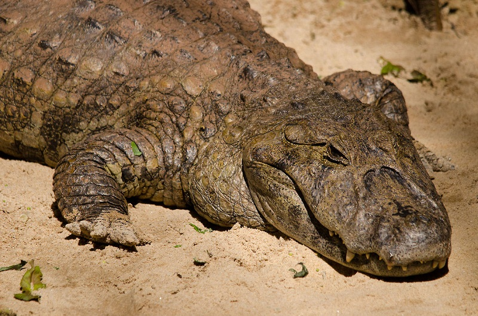

Caimans are small members of the crocodile family and fall under the crocodilians. They look similar to alligators and crocodiles and have a range of sizes.
Caimans average out to be around 2-2.5 meters long or 6.6-8 feet long. There's the dwarf species of caiman who only average around 1.2-1.7 meters or 4-5.6 feet long. Then there's the giant black caiman that average out to 4.9-5.2 meters or a whoping 16-17 feet in length.
With these crocodilians, the dwarf species can be kept as pets, granted they aren't recommended as pets, especially to untrained and people who know nothing of these reptiles. They may be small but they aren't weak, they are dangerous just like any other crocodilian.
What makes caiman different from gators or crocs? They are closer to alligators but there are differences to tell them apart. With their teeth, alligators have conical teeth while caimans have sharper, more jagged ones. Caimans also have stronger overbites then alligators do. Gators are found in North America and China, while caiman are found in Central and South America. Crocs and gators are also larger then average caiman, just not the black caiman! Another huge differnce is if you ever get to look inside their mouths. Caimans have orange-tinted gums while alligators have tan or beige-looking ones.
What are the all the species of caiman though?
First off we have our Curvier's dwarf caiman. The Cuvier's dwarf caiman can survive in colder waters than other caimans, and are known as the wedge-head caiman in the pet trade.

Our second species is the Smooth-Fronted Caiman. It is the second-smallest caiman species and also known as Schneider's dwarf caiman.
The third species of caiman is the Yacare Caiman. There are over 10 million yacare caimans in the Brazilian Pantanal, which represents the world's biggest single crocodilian population.
Our fourth caiman is the spectacled caiman. This crocodilian inhabits both South and Central America. They are also known as the common caiman or white caiman.
Our fifth species is the Broad-snouted caiman. As their name suggest, they have broad snouts, which have been adapted for ripping through dense vegetation.
Last but not least, our sixth caimanis the Black Caiman, the largest species there is. With these caiman, their skull morphology varies with gender and age, meaning that males have a stronger bite force and can exploit larger prey than females.
NEVER go close to any crocodilian though, only professionals should but even then they are dangerous.
They are by no surprise, carnivores. Caiman eat fish, crustaceans, and small mammals. However, they will also opportunistically feed on larger prey, such as deer or capybara when they come close enough. With this diet they are very helpful to the enviroment. From keeping prey population in check to their waste provide nutrients in the water for plants.
These crocodilians also don't need a table to show their locations. They're found in Mexico, Central and South America.
Commonly found in the marshes, slow rivers, and lakes. They always stay close to water for shelter and their food.
- There are unconfirmed reports of black caimans measuring as long as 20 feet.
- They lay 14-60 eggs (depending on the species) in their nest.
- Only 10% of young caimans live to 1-year of age due to predation by birds, cats, fish, otters, and other caimans.
- Curvier's dwarf caiman are typically kept as pets due to them staying so small.
- While certin caiman such as the black caiman is an apex predator, smaller caiman are lower on the food chain.
- Most species of caiman are too small to be dangerous to humans, and prey on much smaller animals.
- They're mainly freshwater reptiles but can survive in salt water for several hours.
- Male caiman will emit low-frequency bellows that cause the waters around them to shake to attract potential mates.
- These crocodilians are mainly nocturnal.